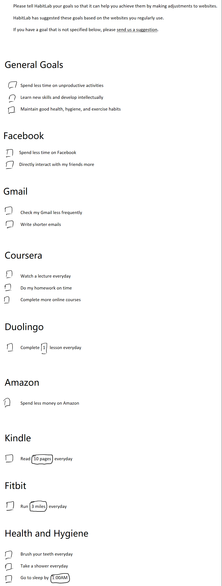

<link rel="import" href="../bower_components/polymer/polymer.html">
<link rel="import" href="../bower_components/paper-checkbox/paper-checkbox.html">

<link rel="import" href="intervention-view-single.html">

<dom-module id="options-interventions">
  <style>
    :host {
      display: block;
      width: 100%;
      height: 100%;
    }
  </style>
  <template>
    <div style="margin: 10px">
      <!--  -->
      <p>HabitLab automatically manages your interventions by default to maximize their effectiveness. You do not need to modify any settings on this page. However, if you particularly like/dislike an intervention, you can set it to be permanently enabled or disabled.</p>

      <p>If you'd like to request an intervention that isn't listed below, please <a href="#">send us a suggestion</a></p>

      <paper-checkbox>Send anonymized data about the effectiveness of interventions to researchers so we can make better interventions for you</paper-checkbox>

      <template is="dom-repeat" items="{{sites_and_interventions}}" as="site_and_interventions">
        <h1>{{site_and_interventions.sitename}}</h1>
        
        <template is="dom-repeat" items="{{site_and_interventions.interventions}}" as="intervention">
          <template is="dom-if" if="{{intervention.enabled_goals.length}}">
            <intervention-view-single intervention="{{intervention}}"></intervention-view-single>
            <br><br>
          </template>
        </template>

        <template is="dom-repeat" items="{{site_and_interventions.interventions}}" as="intervention">
          <template is="dom-if" if="{{!intervention.enabled_goals.length}}">
            <intervention-view-single intervention="{{intervention}}"></intervention-view-single>
            <br><br>
          </template>
        </template>

      </template>
    </div>
  </template>
  <script src="options-interventions.js"></script>
</dom-module>
